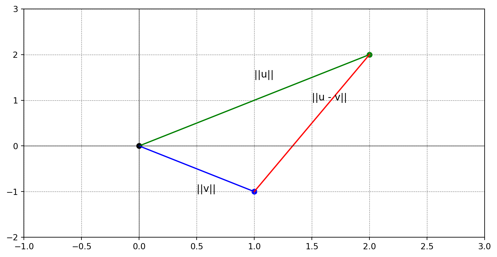

Vector Geometry
Vector Geometry
Learning Objectives
- Discuss the computational, geometric, and algebraic views of vectors.
- Recall the notion of the inner product and use it for vector geometry, covering the concepts of length, distance, orthogonality, and angle.
- Introduce k-Nearest Neighbors (k-NN), a supervised, nonparametric classifier.
- Discuss the curse of dimensionality, the reason behind the ineffectiveness of k-NN in high dimensions, and a potential solution for it.
Matplotlib